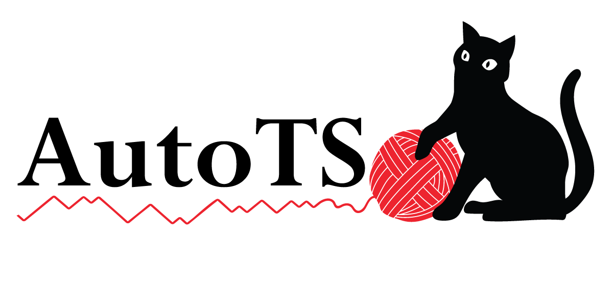

Index
A
|
B
|
C
|
D
|
E
|
F
|
G
|
H
|
I
|
K
|
L
|
M
|
N
|
O
|
P
|
R
|
S
|
T
|
U
|
V
|
W
|
Z
A
ARIMA (class in autots.models.statsmodels)
AutoTS (class in autots)
(class in autots.evaluator.auto_ts)
autots (module)
autots.datasets (module)
autots.datasets.fred (module)
autots.evaluator (module)
autots.evaluator.auto_model (module)
autots.evaluator.auto_ts (module)
autots.evaluator.metrics (module)
autots.models (module)
autots.models.basics (module)
autots.models.dnn (module)
autots.models.ensemble (module)
autots.models.gluonts (module)
autots.models.prophet (module)
autots.models.sklearn (module)
autots.models.statsmodels (module)
autots.models.tfp (module)
autots.models.tsfresh (module)
autots.templates (module)
autots.templates.general (module)
autots.tools (module)
autots.tools.holiday (module)
autots.tools.impute (module)
autots.tools.probabilistic (module)
autots.tools.profile (module)
autots.tools.shaping (module)
autots.tools.transform (module)
AverageValueNaive (class in autots.models.basics)
B
basic_profile() (autots.evaluator.auto_model.ModelObject method)
Best3Ensemble() (in module autots.models.ensemble)
best_model (autots.AutoTS attribute)
(autots.evaluator.auto_ts.AutoTS attribute)
biased_ffill() (in module autots.tools.impute)
C
clip_outliers() (in module autots.tools.transform)
concat() (autots.evaluator.auto_model.TemplateEvalObject method)
containment() (in module autots.evaluator.metrics)
contour() (in module autots.evaluator.metrics)
create_forecast_index() (autots.evaluator.auto_model.ModelObject method)
create_model_id() (in module autots.evaluator.auto_model)
CumSumTransformer (class in autots.tools.transform)
D
data_profile() (in module autots.tools.profile)
date_part() (in module autots.models.sklearn)
Detrend (class in autots.tools.transform)
dict_recombination() (in module autots.evaluator.auto_model)
DifferencedTransformer (class in autots.tools.transform)
DistEnsemble() (in module autots.models.ensemble)
DynamicFactor (class in autots.models.statsmodels)
E
EmptyTransformer (class in autots.tools.transform)
EnsembleForecast() (in module autots.models.ensemble)
EnsembleTemplateGenerator() (in module autots.models.ensemble)
error_correlations() (in module autots.evaluator.auto_ts)
ETS (class in autots.models.statsmodels)
EvalObject (class in autots.evaluator.metrics)
export_template() (autots.AutoTS method)
(autots.evaluator.auto_ts.AutoTS method)
F
fake_date_fill() (in module autots.tools.impute)
fake_regressor() (in module autots.evaluator.auto_ts)
FBProphet (class in autots.models.prophet)
fill_forward() (in module autots.tools.impute)
fill_mean() (in module autots.tools.impute)
fill_median() (in module autots.tools.impute)
fill_na() (autots.GeneralTransformer method)
(autots.tools.transform.GeneralTransformer method)
fill_zero() (in module autots.tools.impute)
FillNA() (in module autots.tools.impute)
fit() (autots.AutoTS method)
(autots.evaluator.auto_ts.AutoTS method)
(autots.GeneralTransformer method)
(autots.models.basics.AverageValueNaive method)
(autots.models.basics.LastValueNaive method)
(autots.models.basics.MotifSimulation method)
(autots.models.basics.SeasonalNaive method)
(autots.models.basics.ZeroesNaive method)
(autots.models.dnn.KerasRNN method)
(autots.models.gluonts.GluonTS method)
(autots.models.prophet.FBProphet method)
(autots.models.sklearn.RollingRegression method)
(autots.models.sklearn.WindowRegression method)
(autots.models.statsmodels.ARIMA method)
(autots.models.statsmodels.DynamicFactor method)
(autots.models.statsmodels.ETS method)
(autots.models.statsmodels.GLM method)
(autots.models.statsmodels.GLS method)
(autots.models.statsmodels.UnobservedComponents method)
(autots.models.statsmodels.VAR method)
(autots.models.statsmodels.VARMAX method)
(autots.models.statsmodels.VECM method)
(autots.models.tfp.TensorflowSTS method)
(autots.models.tfp.TFPRegression method)
(autots.models.tfp.TFPRegressor method)
(autots.models.tsfresh.TSFreshRegressor method)
(autots.tools.shaping.NumericTransformer method)
(autots.tools.transform.CumSumTransformer method)
(autots.tools.transform.Detrend method)
(autots.tools.transform.DifferencedTransformer method)
(autots.tools.transform.EmptyTransformer method)
(autots.tools.transform.GeneralTransformer method)
(autots.tools.transform.IntermittentOccurrence method)
(autots.tools.transform.PctChangeTransformer method)
(autots.tools.transform.PositiveShift method)
(autots.tools.transform.RollingMeanTransformer method)
(autots.tools.transform.SeasonalDifference method)
(autots.tools.transform.SinTrend method)
fit_sin() (autots.tools.transform.SinTrend method)
fit_transform() (autots.GeneralTransformer method)
(autots.tools.transform.CumSumTransformer method)
(autots.tools.transform.Detrend method)
(autots.tools.transform.DifferencedTransformer method)
(autots.tools.transform.EmptyTransformer method)
(autots.tools.transform.GeneralTransformer method)
(autots.tools.transform.IntermittentOccurrence method)
(autots.tools.transform.PctChangeTransformer method)
(autots.tools.transform.PositiveShift method)
(autots.tools.transform.RollingMeanTransformer method)
(autots.tools.transform.SeasonalDifference method)
(autots.tools.transform.SinTrend method)
G
GeneralTransformer (class in autots)
(class in autots.tools.transform)
generate_regressor_params() (in module autots.models.sklearn)
generate_score() (in module autots.evaluator.auto_model)
get_fred_data() (in module autots.datasets.fred)
get_new_params() (autots.evaluator.auto_model.ModelObject method)
(autots.models.basics.AverageValueNaive method)
(autots.models.basics.LastValueNaive method)
(autots.models.basics.MotifSimulation method)
(autots.models.basics.SeasonalNaive method)
(autots.models.basics.ZeroesNaive method)
(autots.models.gluonts.GluonTS method)
(autots.models.prophet.FBProphet method)
(autots.models.sklearn.RollingRegression method)
(autots.models.sklearn.WindowRegression method)
(autots.models.statsmodels.ARIMA method)
(autots.models.statsmodels.DynamicFactor method)
(autots.models.statsmodels.ETS method)
(autots.models.statsmodels.GLM method)
(autots.models.statsmodels.GLS method)
(autots.models.statsmodels.UnobservedComponents method)
(autots.models.statsmodels.VAR method)
(autots.models.statsmodels.VARMAX method)
(autots.models.statsmodels.VECM method)
(autots.models.tfp.TensorflowSTS method)
(autots.models.tfp.TFPRegression method)
(autots.models.tsfresh.TSFreshRegressor method)
get_params() (autots.evaluator.auto_model.ModelObject method)
(autots.models.basics.AverageValueNaive method)
(autots.models.basics.LastValueNaive method)
(autots.models.basics.MotifSimulation method)
(autots.models.basics.SeasonalNaive method)
(autots.models.basics.ZeroesNaive method)
(autots.models.gluonts.GluonTS method)
(autots.models.prophet.FBProphet method)
(autots.models.sklearn.RollingRegression method)
(autots.models.sklearn.WindowRegression method)
(autots.models.statsmodels.ARIMA method)
(autots.models.statsmodels.DynamicFactor method)
(autots.models.statsmodels.ETS method)
(autots.models.statsmodels.GLM method)
(autots.models.statsmodels.GLS method)
(autots.models.statsmodels.UnobservedComponents method)
(autots.models.statsmodels.VAR method)
(autots.models.statsmodels.VARMAX method)
(autots.models.statsmodels.VECM method)
(autots.models.tfp.TensorflowSTS method)
(autots.models.tfp.TFPRegression method)
(autots.models.tsfresh.TSFreshRegressor method)
GLM (class in autots.models.statsmodels)
GLS (class in autots.models.statsmodels)
GluonTS (class in autots.models.gluonts)
H
HDistEnsemble() (in module autots.models.ensemble)
historic_quantile() (in module autots.tools.probabilistic)
holiday_flag() (in module autots.tools.holiday)
HorizontalEnsemble() (in module autots.models.ensemble)
HorizontalTemplateGenerator() (in module autots.models.ensemble)
I
import_results() (autots.AutoTS method)
(autots.evaluator.auto_ts.AutoTS method)
import_template() (autots.AutoTS method)
(autots.evaluator.auto_ts.AutoTS method)
inferred_normal() (in module autots.tools.probabilistic)
IntermittentOccurrence (class in autots.tools.transform)
inverse_transform() (autots.GeneralTransformer method)
(autots.tools.shaping.NumericTransformer method)
(autots.tools.transform.CumSumTransformer method)
(autots.tools.transform.Detrend method)
(autots.tools.transform.DifferencedTransformer method)
(autots.tools.transform.EmptyTransformer method)
(autots.tools.transform.GeneralTransformer method)
(autots.tools.transform.IntermittentOccurrence method)
(autots.tools.transform.PctChangeTransformer method)
(autots.tools.transform.PositiveShift method)
(autots.tools.transform.RollingMeanTransformer method)
(autots.tools.transform.SeasonalDifference method)
(autots.tools.transform.SinTrend method)
K
KerasRNN (class in autots.models.dnn)
L
last_window() (in module autots.models.sklearn)
LastValueNaive (class in autots.models.basics)
load_toy_daily() (in module autots)
(in module autots.datasets)
load_toy_hourly() (in module autots)
(in module autots.datasets)
load_toy_monthly() (in module autots)
(in module autots.datasets)
load_toy_weekly() (in module autots)
(in module autots.datasets)
load_toy_yearly() (in module autots)
(in module autots.datasets)
long_to_wide() (in module autots)
(in module autots.tools.shaping)
M
mae() (in module autots.evaluator.metrics)
ModelMonster() (in module autots.evaluator.auto_model)
ModelObject (class in autots.evaluator.auto_model)
ModelPrediction() (in module autots.evaluator.auto_model)
MotifSimulation (class in autots.models.basics)
N
NewGeneticTemplate() (in module autots.evaluator.auto_model)
NumericTransformer (class in autots.tools.shaping)
O
outlier_treatment() (autots.GeneralTransformer method)
(autots.tools.transform.GeneralTransformer method)
P
PctChangeTransformer (class in autots.tools.transform)
percentileofscore_appliable() (in module autots.tools.probabilistic)
pinball_loss() (in module autots.evaluator.metrics)
Point_to_Probability() (in module autots.tools.probabilistic)
PositiveShift (class in autots.tools.transform)
predict() (autots.AutoTS method)
(autots.evaluator.auto_ts.AutoTS method)
(autots.models.basics.AverageValueNaive method)
(autots.models.basics.LastValueNaive method)
(autots.models.basics.MotifSimulation method)
(autots.models.basics.SeasonalNaive method)
(autots.models.basics.ZeroesNaive method)
(autots.models.dnn.KerasRNN method)
(autots.models.gluonts.GluonTS method)
(autots.models.prophet.FBProphet method)
(autots.models.sklearn.RollingRegression method)
(autots.models.sklearn.WindowRegression method)
(autots.models.statsmodels.ARIMA method)
(autots.models.statsmodels.DynamicFactor method)
(autots.models.statsmodels.ETS method)
(autots.models.statsmodels.GLM method)
(autots.models.statsmodels.GLS method)
(autots.models.statsmodels.UnobservedComponents method)
(autots.models.statsmodels.VAR method)
(autots.models.statsmodels.VARMAX method)
(autots.models.statsmodels.VECM method)
(autots.models.tfp.TensorflowSTS method)
(autots.models.tfp.TFPRegression method)
(autots.models.tfp.TFPRegressor method)
(autots.models.tsfresh.TSFreshRegressor method)
PredictionEval() (in module autots.evaluator.metrics)
PredictionObject (class in autots.evaluator.auto_model)
PredictWitch() (in module autots.evaluator.auto_model)
R
RandomTemplate() (in module autots.evaluator.auto_model)
RandomTransform() (in module autots.tools.transform)
regression_check (autots.AutoTS attribute)
(autots.evaluator.auto_ts.AutoTS attribute)
remove_outliers() (in module autots.tools.transform)
results() (autots.AutoTS method)
(autots.evaluator.auto_ts.AutoTS method)
retrieve_regressor() (in module autots.models.sklearn)
rmse() (in module autots.evaluator.metrics)
rolling_mean() (in module autots.tools.impute)
rolling_x_regressor() (in module autots.models.sklearn)
RollingMeanTransformer (class in autots.tools.transform)
RollingRegression (class in autots.models.sklearn)
S
seasonal_int() (in module autots.evaluator.auto_model)
SeasonalDifference (class in autots.tools.transform)
SeasonalNaive (class in autots.models.basics)
simple_context_slicer() (in module autots.tools.transform)
simple_train_test_split() (in module autots.tools.shaping)
SinTrend (class in autots.tools.transform)
smape() (in module autots.evaluator.metrics)
smape_old() (in module autots.evaluator.metrics)
SPL() (in module autots.evaluator.metrics)
subset_series() (in module autots.tools.shaping)
T
TemplateEvalObject (class in autots.evaluator.auto_model)
TemplateWizard() (in module autots.evaluator.auto_model)
TensorflowSTS (class in autots.models.tfp)
TFPRegression (class in autots.models.tfp)
TFPRegressor (class in autots.models.tfp)
total_runtime() (autots.evaluator.auto_model.PredictionObject method)
trans_dict_recomb() (in module autots.evaluator.auto_model)
transform() (autots.GeneralTransformer method)
(autots.tools.shaping.NumericTransformer method)
(autots.tools.transform.CumSumTransformer method)
(autots.tools.transform.Detrend method)
(autots.tools.transform.DifferencedTransformer method)
(autots.tools.transform.EmptyTransformer method)
(autots.tools.transform.GeneralTransformer method)
(autots.tools.transform.IntermittentOccurrence method)
(autots.tools.transform.PctChangeTransformer method)
(autots.tools.transform.PositiveShift method)
(autots.tools.transform.RollingMeanTransformer method)
(autots.tools.transform.SeasonalDifference method)
(autots.tools.transform.SinTrend method)
TSFreshRegressor (class in autots.models.tsfresh)
U
UniqueTemplates() (in module autots.evaluator.auto_model)
UnobservedComponents (class in autots.models.statsmodels)
unpack_ensemble_models() (in module autots.evaluator.auto_model)
V
validation_aggregation() (in module autots.evaluator.auto_model)
VAR (class in autots.models.statsmodels)
Variable_Point_to_Probability() (in module autots.tools.probabilistic)
VARMAX (class in autots.models.statsmodels)
VECM (class in autots.models.statsmodels)
W
window_maker() (in module autots.models.sklearn)
WindowRegression (class in autots.models.sklearn)
Z
ZeroesNaive (class in autots.models.basics)

Automated Forecasting
Navigation
Intro
AutoTS
Tutorial
autots
Related Topics
Documentation overview
Quick search